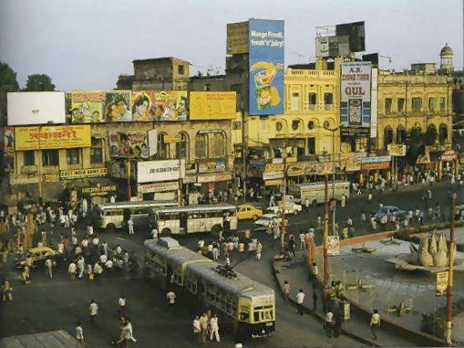
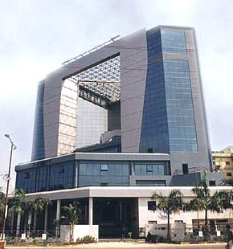
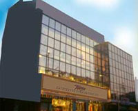
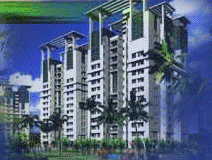

The British departed Calcutta on August 15, 1947. Calcutta became the capital of the state of West Bengal in the Republic of India. Its rich hinterland in eastern Bengal was suddenly separated into another nation. Railways to Assam and northern Bengal were cut off. And refugees from East Pakistan poured into the city by the million.
The city of plenty, which had never turned away a persecuted soul, could not do it again. Calcutta's sidewalks accommodated the millions of political refugees at the cost of its own wellbeing. The government's doctrine of socialism took a heavy toll. Government-owned businesses monopolised markets. Equalized freight rates eliminated Calcutta's natural advantage. Economic stagnation set in almost immediately.

The visionary Chief Minister Dr. Bidhan Chandra Roy planned three new townships — Salt Lake, Kalyani and Durgapur — to take some focus away from Calcutta. In 1967, a Communist government came to power under Chief Minister Jyoti Basu. An ultra-communist Naxalite movement ravaged Calcutta. Work on the subway system, begun in 1975, ran at a snail's pace and grounded the city's road network.
Into this context arrived a young nun from Yugoslavia named Agnes Gonzha Bojaxhin — Mother Teresa — who founded the Missionaries of Charity in 1947. Mother Teresa's work showed Calcutta in a very negative manner internationally, but helped Calcutta take much better care of its poor than other cities. She became the fourth Nobel Laureate of Calcutta in 1979.
The 1990s saw a resurgence. The Metro was finally in place. Calcutta's power network, once notorious, became the finest in the region. Software professionals were turning out computer software for the world at facilities in Salt Lake. The Town Hall, which had once felicitated Tagore, was restored by public subscription and readied to welcome the fifth Nobel prize winner from Calcutta, Dr. Amartya Sen.


